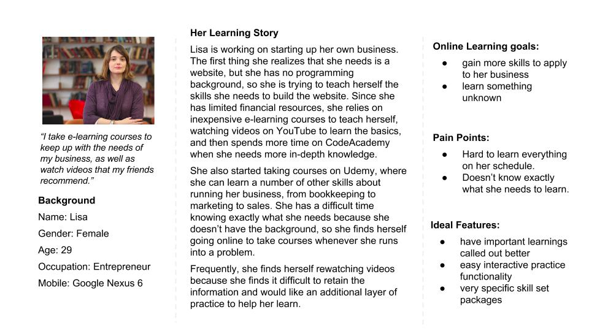
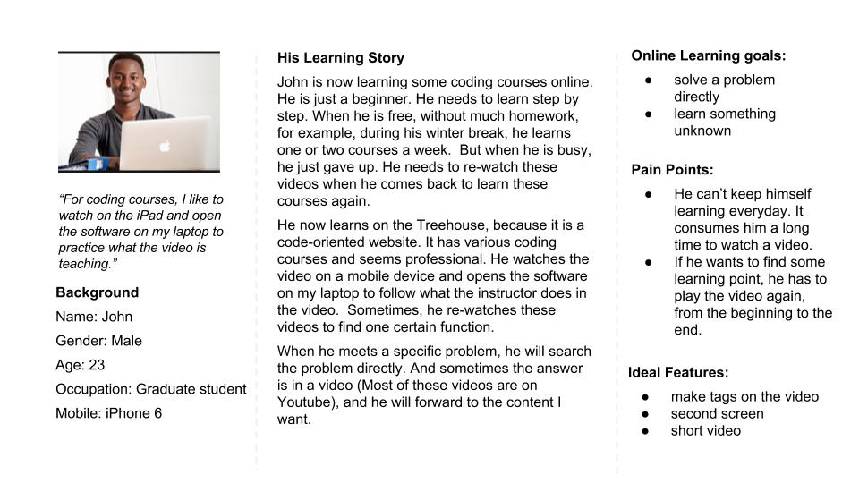
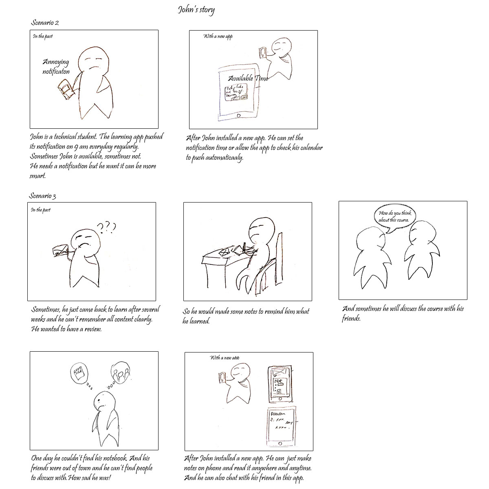

2015.3-present
User Resercher, Interaction Designer
Matthew Erstling
User Interview, User Survey
Axure,Photoshop
One of the fastest-growing trends in education is the concept of e-learning. Simultaneously, there is a growing trend toward mobile content consumption. This means that there is a growing convergence of the two trends; however, there are many issues with the current application of design and technology in e-learning that is preventing a more widespread adoption, as well as preventing students from achieving the same amount of value as they would in a traditional classroom setting.
After conducting our own cursory experiments with the existing platforms (notably iTunes U, edX, Coursera, and Lynda.com), we found several issues with the design of each. While they all offered their own unique approaches to the user experience, they each had significant shortcomings as well.
Our goal with this project is to evaluate the current e-learning platforms, conduct user research to identify user experience gaps and issues, and implement them into a new mobile platform.
We dicussed about our target users, what might they do, what might they use,etc. With these questions, we wrote an whole user interview script which would help us to find more painpoint. Finally we conducted 7 users interviews, inculding some students and young entrepreneurs. Here is the scripts.
According to the research results, we just found two kinds of target user. In order to show our results clearly, we made two persona and their related stories.



To be continued
 YANWEN GUO
YANWEN GUO